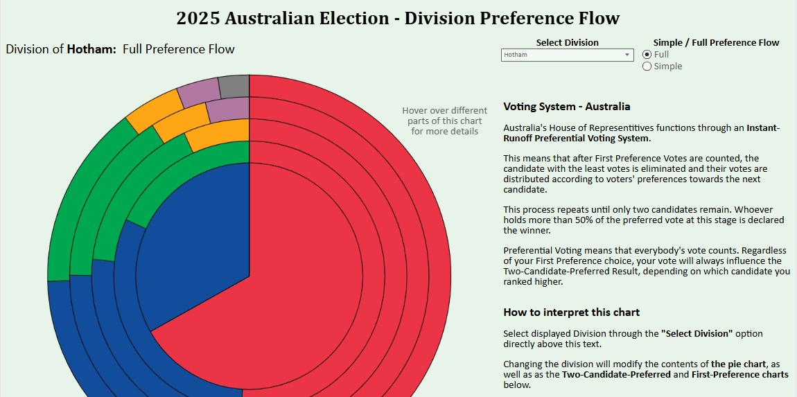

Map Population Density Application
Draw a Shape to find out its population
Circus Maximus Interactive Diorama
3D-printed Ancient Roman Chariot Racing Stadium.
Entirely Modelled & Printed from scratch.

2025 Australian Divisional Results - Visualised
Maps the Winner, Prefernence flows, and Historical elections of each division in the most recent Australian Federal election. 
Reinforcement Learning Group Project
TODO